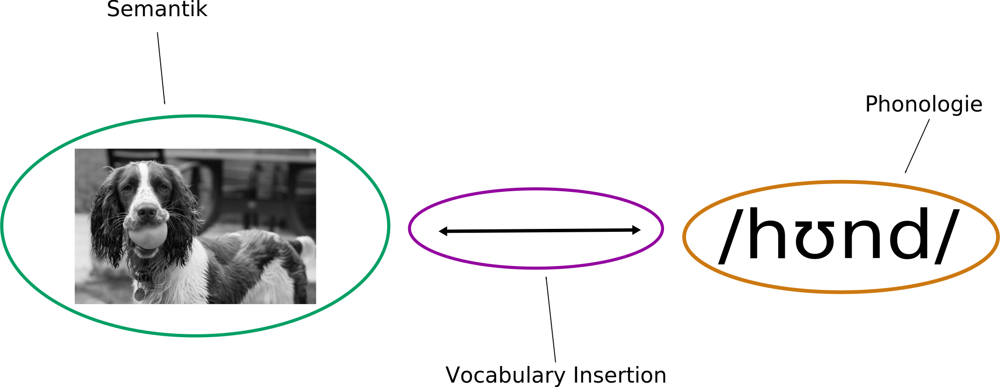

Suppletion:
Adjektive
24. Januar 2020
Komplexe Merkmale
- Was sind die interne Strukturen von Merkmale?
- Numerusmerkmale:
- [±Singular], [±Minimal], [±Wenig]
- Personmerkmale:
- [±Sprecher], [±Zuhörer]
- Genus: ¯\_(ツ)_/¯
- Kasus:
- [[[ nom [ akk [ dat ]
Suppletion
- Was bedeutet ''Suppletion''?
- Wir verstehen ''Suppletion'' als enger Allomorphie.
- Das bedeutet, dass Suppletion ist eine Subklasse von Allomorphie ist.
- Allomorphie: wenn ein Morphem zwei (oder mehr) Realisierungen hat.
Allomorphie
- plural im Deutschen hat viele Realisierungen.
- Die Bedeutung ist aber dieselbe.
Degree Morphology
- Adjektive haben oft ein Basisform (positiv), Komparaitvform und ein Superlativform.
- Das passiert nicht immer, aber im vielen Sprachen.
| Positiv | Komparaitiv | Superlativ | Sprache |
|---|---|---|---|
| grün | grüner | am grünsten | Deutsch |
| happy | happier | happiest | Englisch |
| dobər | po-dobər | naj-dobər | Bulgarian |
Suppletion
- Manchmal sehen wir eine Änderung im Komparativ und Superlativ
- Die Folgenden kommen von Indo-European
| Positiv | Komparativ | Superlativ | Sprache |
|---|---|---|---|
| good | better | best | Englisch |
| bra | bättre | bäst | Schwedisch |
| dobrý | lepši | nejlepši | Tschechisch |
| mat | gwell(och) | gwellān | Breton |
Andere Sprache
- Nicht nur IE
| Positiv | Komparativ | Superlativ | Sprache |
|---|---|---|---|
| hyvä | parempi | parhain | Finnisch |
| osda | dajehla | widajelʌ̃ʔi | Cherokee |
| ezär | xoča | mačēne | Svan |
| kargii | uk'etesi | sauk'eteso | Georgian |
Mögliche Muster: GRÜN
| Positiv | Komparativ | Superlativ | Muster |
|---|---|---|---|
| grün | grüner | am grünsten | AAA |
| gut | besser | am besten | ABB |
| asko | gehiago | gehien | ABB |
| bonus | melior | optimus | ABC |
| da | gwell | gorau | ABC |
Unmöglich
| Positiv | Komparativ | Superlativ | Muster |
|---|---|---|---|
| gut | guter | am besten | AAB |
| gut | besser | am gutsten | ABA |
Mögliche Muster
| Positiv | Komparativ | Superlativ | |
|---|---|---|---|
| A | A | A | ✓ |
| A | B | B | ✓ |
| A | B | C | ✓ |
| A | B | A | ✕ |
| A | A | B | ✕ |
VI
- Am Anfang dieses Seminar, haben wir gesehen, dass es abstrakte Merkmale in der Syntax gibt.
- Aber, diese abstakte Merkmale müßen Phonologische Merkmale werden.
- VI ist das Prozess, das abstrakte Merkmale zur phonologische Merkmale übersetzt.
VI
VI
- Normalerweise wird VI in dem folgenden Art geschrieben:
- √hund ⇔ /hʊnd/
- √katze ⇔ /katzə/
- √eule ⇔ /ɔjlə/
- √ = Zeichen für Wurzel
- wurzel = wird in Kapitälchen geschrieben
- /fɔ:m/ = phonologisches Form
- ⇔ = sich entspricht zu
Allomorphie
- Manchmal ist die Form abhängig von Kontext.
- Wir schreiben das Kontext nach '|'.
- √pl ⇔ /ən/ | {√student, √thema}
- √pl ⇔ /ə/ (woanders)
- √pl ⇔ /s/ | {√auto, √hobby}
- √pl ⇔ /∅/ | {√löffel}
- Wenn es kein bestimmte Kontext gibt, dann die Regel ist die "woanders" Regel, die in alle nicht-bestimmte Kontexte anwendet.
Elsewhere
- Die woanders Regel kann in Prinzip für jede Substantiv anwenden.
- Regeln, die ein Kontext spezifiziern, vor die woanders Regel Vorrang haben.
- Man müß die meist spezifisch Regel benutzen!
Vorschlag: Bobaljik
- Bobaljik stellt die folgende Hypothese vor:
Containment Hypothesis
Die Superlativ enthält immer die Komparativstruktur.
Adjektive
Positiv
Komparativ
Superlativ
Beweis #1
- Für manche Sprachen ist die Containment klar.
| Positive | Komparativ | Superlativ | Sprache |
|---|---|---|---|
| kam | kamtar | kamtarin | Persisch |
| šüa | šüanar | šüanarste | Zimbrisch |
| mlady | mladší | nejmladší | Tschechisch |
| nagy | nagyobb | legnagyobb | Ungarisch |
| nüs˚ə | c̨'anüs˚ə | ac̨'anüs˚ə | Ubychisch |
Beweis #2
- Bobailjik zeigt die Folgende an:
Synthetisch–Superlativ Generalisierung
Keine Sprache hat ein morphologische Superlativ ohne ein morphologische Komparativ.
| Positiv | Komparativ | Superlativ | Sprache |
|---|---|---|---|
| üvä | parəpi | kəikkia parəpi | Votic |
| polxoj | xuže | samyj ploxoj | Russisch |
| good | more good | *goodest | hypothetisch |
Beweis #2
- Errinerung von letzte Woche: suffixe wird von Verschiebung gebildet.
Beweis #2
- Verschiebung zur #1: morphologisch Komparativ, synthetisch Superlativ
- Verschiebung zur #2: morphologisch Komparativ, Superlativ
- Verschiebung zur #2 setze Verschiebung zur #1 aus.
*ABA
- √gut ⇔ /bɛs/ | ___ komp
- √gut ⇔ /gʊt/ woanders
- √grün ⇔ /gru:n/
- Weil der Superlativ immer den Komparativ enthält, muss die mehr spezifishce Regel sowohl im Komparativ- als auch Superlativkontext angewendet werden.
- Gleichzeitig kann die wenig-spezifische Regel nicht mehr angewendet werden.
ABC
- Mit nur eine Regul für Komparativ, bilden wir einen ABB Muster
- Mit zwei spezifishce Regel bilden wir einen ABC Muster.
- bonus ~ melior ~ optimus (Lateinisch)
- √gut ⇔ /optimus/ | ___ komp ] supr ]
- √gut ⇔ /mɛliɔ:/ | ___ komp
- √gut ⇔ /bonʊs/
Zusammenfassung
- Der Struktur von Adjektive, besonderes Superlative, ist komplex.
- Der Superlativstruktur enthält der Komparativstruktur,obwohl in vielen Fälle dies nicht offensichtlich ist.
- Wir können Suppletion als ein Diagnostik von dem internen Struktur von Elementen.
- Nächste Woche: Kasus und Numerussuppletion, danach Klusivitätsuppletion.